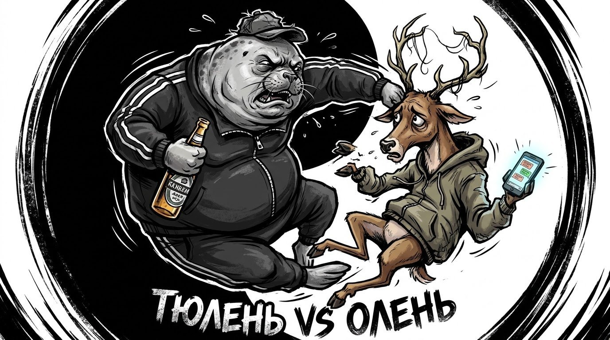
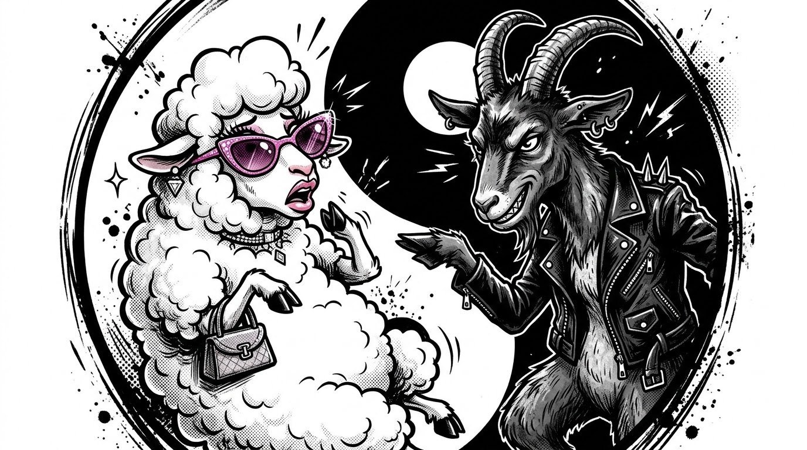
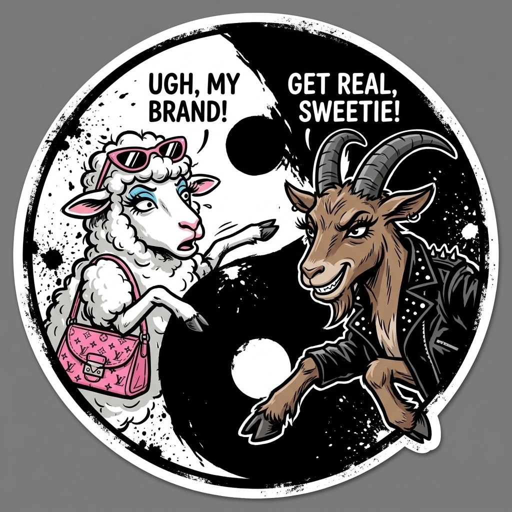

Это пространство для handmade криптомемасиков. Предлагаем участие всем желающим. Для затравки вкидываем собственные креативы. Сопротивляйтесь, если сможете. Здесь обитают козёл против овцы, коза против овцы и тюлень против оленя. Всё, на этом останавливаемся. Дальше будем просто добрасывать генерации фото и видео. Погнали.


